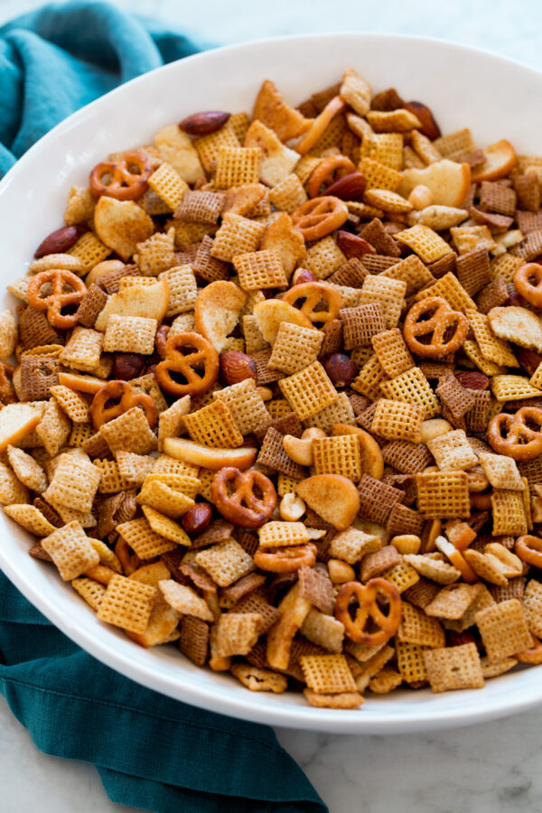

My Chex Mix

Ingredients:
- 1 box Honey Nut Chex
- 1 box Golden Grahams
- 1 box Life
- Mixed nuts
- 1 stick butter
- 1.5 Tbsp Seasoned Salt
- 1/4 cup Worcestershire Sauce
Method
- Preheat oven to 250 F
- Mix together all cereals. I use a large plastic tote, but a garbage bag works just as well.
- Melt the butter, mix with Seasoned Salt and Worcestershire Sauce
- Fill 9x13 baking dish with cereal mix, making sure you can still stir it without spilling!
- Pour the seasoned butter mix over the cereal, tossing and turning to coat.
- Bake for 1 hour, stirring halfway through
- Enjoy! It's good hot, but even better once cooled to room temperature!